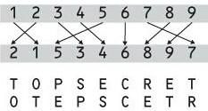

Classical Ciphers
In cryptography, a classical cipher is a type of cipher that was used historically but now has fallen, for the most part, into disuse. In contrast to modern cryptographic algorithms, most classical ciphers can be practically computed and solved by hand. Classical ciphers are often divided into transposition ciphers and substitution ciphers.
Substitution ciphers

In a substitution cipher, letters (or groups of letters) are systematically replaced throughout the message for other letters (or groups of letters).
Transposition ciphers
In a transposition cipher, the letters themselves are kept unchanged, but their order within the message is scrambled according to some well-defined scheme. Many transposition ciphers are done according to a geometric design. A simple (and once again easy to crack) encryption would be to write every word backwards. For example, "Hello my name is Alice." would now be "olleH ym eman si ecilA." A scytale is a machine that aids in the transposition of methods.